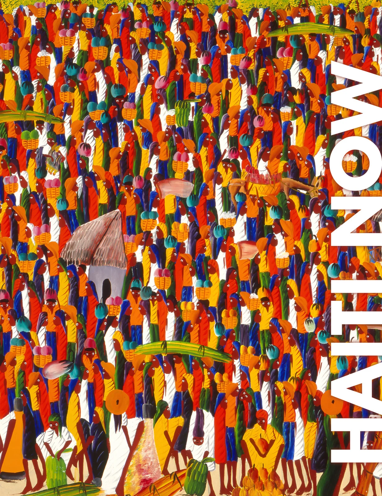

The Haiti Now Project, proposed by Thom Mayne, Eui-Sung Yi and UCLA Architecture and Urban Design, recognizes that the most experienced and advanced responders to humanitarian crises are leading the effort to resurrect Haiti and questions what urban planners and architects can do. Clearly, the planners' role is not within the first responder tier, but there is need for a sustainable vision for the region's future. Planning must occur now.
Haiti Now is a 700+ page visual almanac that depicts Haiti's issues and opportunities. This comprehensive resource encompasses the nation's modern history, politics, infrastructure, ecology, cultural and social issues through graphics, photography, data and text in both English and French. It is intended to build a common foundation of knowledge and understanding to unite a broad collection of professionals including planners, politicians, aid workers, artists, and other cultural investigators. Its aim is to inspire new possibilities for Haiti's future. "Haiti Now" includes a foreword by The Right Honorable Michælle Jean and contributions by former Haitian Prime Minister Michèle Pierre-Louis, Frederick Mangones, Kesner Pharel, Jean W. Wiener, Claudine Michel, Nadège T. Clitandre and Iwan Baan.
Haiti Now was initiated after recognizing that the long-term development after the devastating 2010 earthquake of Haiti depends on an integrative and multi-layered strategy that considers the built, social and cultural fabric of the country.
Relief, Recovery and Planning
After a region experiences disaster, a process of Relief, Recovery and Planning can re-establish a safe sustainable environment for all those affected. Relief is reaction — coordinating the inflow of products and services to meet emergency needs. Recovery is strategy — strengthening pre-existing local physical systems so a devastated region can stand again. Planning is prevention — long-term vision that anticipates solutions to latent problems.
Cultural Reconstruction
The identity and vitality of any nation lies in the distinct flavor, confidence and vibrance of its unique local culture. Cultural reconstruction is adopted by major players in the development world, including UNESCO. The priority for long-term development is to establish and highlight inherent cultural resources, and encourage the growth of auxiliary services and the regionally-appropriate industries that serve them.
Cultural Opportunity
The fortification of culture yields the opportunity for the coupling of culture with strategically identified needs. One potential endeavor links Haitian arts and crafts culture with a strategy for improved access to basic education. A macro strategy for improved international recognition suggests the development of an eco-cultural tourist experience that credits Haiti's fragmented rural infrastructure with protecting and preserving the Caribbean's last remaining virgin beaches.
Cultural Resilience
The ultimate aspiration of any post-disaster strategy is the maturation of the affected region into a resilient society. In Haiti, the absence of many typical commodities and services highlights the role of culture as a vital force in developing future resilience against disaster.
learn more